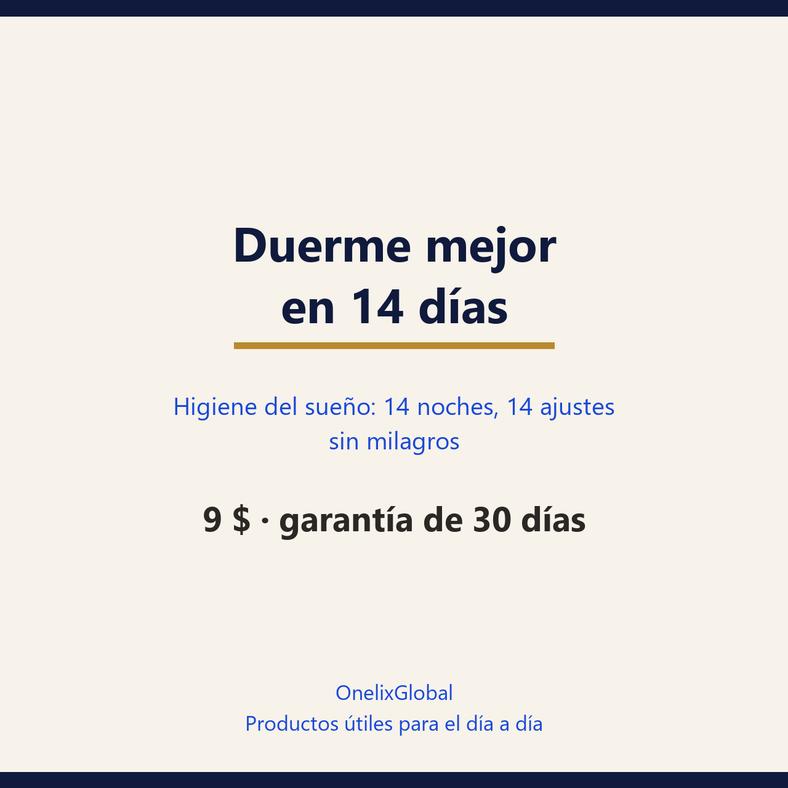

Un cambio por día para que tu cuerpo vuelva a reconocer sus horas. Sin comprar aparatos y sin pastillas de internet: lo que ya tienes en casa, ordenado.
30 días de garantía: si no te sirve, escribes y se resuelve.
Pago seguro en Gumroad · PDF para leer en el móvil, la tablet o impreso.

30 páginasPDF · españolDías 1 a 4: poner las horas (una sola alarma, hora de acostarte, última cafeína, cena). Días 5 a 9: cambiar las señales (luz de día, luz baja, móvil fuera, lista de tareas). Días 10 a 14: medir para ajustar.
100 mg hasta 4 horas antes de dormir no mostraron efecto significativo; 400 mg dentro de las 12 horas previas sí: 1,4 despertares más por hora y unos 30 minutos menos de sueño profundo. La vida media de la cafeína es de 3 a 6 horas.
Escribir la lista de tareas de mañana, en concreto, antes de acostarte: en un estudio con 57 adultos los que escribían pendientes se durmieron antes que los que escribían lo que ya habían hecho.
Tres datos por noche durante cinco días: hora en que te acostaste, minutos que tardaste en dormir y cómo te sentiste al otro día.
Preferimos decirlo claro antes de que pagues.
te acuestas tarde y te levantas cansado; si cambias de horario cada fin de semana; si tomas café por la tarde y no lo relacionabas con dormir mal; si quieres un plan con fechas en vez de consejos sueltos.
llevas meses o años durmiendo mal: lo que tiene mejor respaldo ahí es la terapia cognitivo-conductual del insomnio, con un profesional. Tampoco si roncas fuerte con pausas de respiración o te despiertas con ahogo: eso se consulta, no se arregla con hábitos. La higiene del sueño funciona, pero de media baja 3,4 puntos en el índice de severidad del insomnio y es menos eficaz que esa terapia. La guía lo dice desde la primera página.
No. Todo lo de la guía cuesta cero pesos. El único gasto que vale la pena evaluar es un colchón de más de 10 años.
Los días 1 a 4 suelen notarse en la hora de despertar. La diferencia de fondo se mide al día 14 con tus tres datos, no con la sensación de una noche.
La guía está escrita para horarios estables. Si tu turno rota, las horas fijas son más difíciles: aplícala en la parte de luz, cafeína y dormitorio y consúltalo con un profesional.
Da sueño rápido y despierta en la segunda mitad de la noche. No arregla nada.